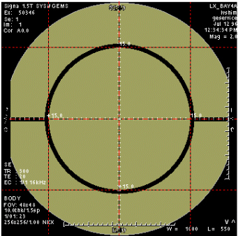

- 00000018WIA30477E20GYZ
- id_131070864.0
- Mar 23, 2020 2:37:19 PM
Troubleshooting and Solutions
| Required persons | Preliminary requirements | Procedure | Finalization |
|---|---|---|---|
| 1 | Not Applicable | Not Applicable | Not Applicable |
| Item | Quantity | Effectivity | Part number | Manufacturer |
|---|---|---|---|---|
| · LVshim Phantom Assembly | 1 | - |
2125245 (1.5T) 2360054 (3.0T) | - |
| · Nesting Plate Assembly | 1 | - |
2125247 | - |
| Condition | Reference | Effectivity |
|---|---|---|
|
Electric isocenter calibration | - | - |
|
Gradient calibration | - | - |
|
Gram Tuning (Grafidy) | - | - |
|
DC Offset checked and adjusted to zero | - | - |
Localizer Scan
The main purpose of the Localizer Scan is to check the landmark and verify that the ROI is in the center of the image.
- Setup a scan per LVShim Procedure.
Note:
Foreign material (such as staples, metal filings, dirt, etc.) on the LVshim phantom or nesting plate will alter shim harmonics, ensuring that the system will not properly shim. Therefore, before using the phantom and nesting plate, be sure that all foreign material has been cleaned off.
- At the host computer, click on Autoview, just below the Autoview image display screen. Your images will be displayed automatically.
- Set up the Localizer scan as follows:
- In Patient Register, click [New Pt].
- In Patient Information, enter:
Patient ID geservice and press Enter
Patient Name LVshim and press Enter
Weight (lb.) 300
Click Landmark
Next to the Landmark box, click [>] and select Sternal Notch.
- At the keypad on the front magnet enclosure, press LANDMARK and MOVE TO SCAN to position the landmarked phantom at the center of the magnet bore.
- At the operator workspace, prepare the system for LVshim scan using
the "Service Protocols" procedure located on the service methods CD-ROM
Note:
Perform the DC offset (From Diagnostics menu) before each LVShim scan.
- Click Save Series.
- Click Scan.
Note:
If you are performing Rough LVshim, you may have to use Manual Prescan to find the center frequency. Use Center Freq Coarse (CFL) to center on the frequency peak as necessary. Be sure to save the center frequency value before exiting manual prescan. Select the Frequency menu at the top of Manual Prescan window and select Save Frequency. You should also write down the center frequency value for future reference.
- When the image is displayed in the Autoview window, select the Display
icon in the desktop control panel. To display the image, select the Exam,
Series, and Image, and click Viewer. Do the following
to verify that the phantom is centered in the Z direction:
- Click [User Prefs].
- In the User Preferences pop-up window, find Grid Prefs and click Customize...
- Change Grid Spacing (mm) to 150, click OK, and then click Apply.
- Select the button with the grid symbol to turn on the grid. See Figure 1, Centering LV Phantom, for
an example of an image with the alignment grid on.
Figure 1. CENTERING LVSHIM PHANTOM 
- Adjust Window (W) and Level (L) settings until the edges of the phantom image can be clearly seen.
- Verify that the inner phantom sphere is centered within the 150-mm grid in the S/I direction, as shown in Figure 1. If the phantom is not centered, move the phantom in or out of the bore as necessary (based on the grid markings), then landmark again and re-scan.
Crude Image Procedure
The Crude Image procedure is usually used when there is no signal or a very weak signal (such as troubleshooting for reversed I and Q cable).
- Set up the system to perform a head coil scan. Place the EPI foam phantom
holder and 100-mm sphere in the head coil as shown in Figure 2.
Figure 2. EPI PHANTOM POSITIONING IN HEAD COIL  Note:
Note:Foreign material (such as staples, metal filings, dirt, etc.) on the LVshim phantom or nesting plate will alter shim harmonics, ensuring that the system will not properly shim. Therefore, before using the phantom and nesting plate, be sure that all foreign material has been cleaned off.
- Landmark on the center of the head coil, adjust the positioner / sphere to axial alignment light, and press the MOVE TO SCAN button.
- At the operator workspace, select the Scan icon in the desktop control panel, if you have not already done so.
- Click on Autoview, just below the Autoview image display screen. Your images will be displayed automatically.
- Set up the scan as follows:
- In Patient Register, click New Pt.
- Patient ID geservice
- Patient Name LVshim
- Weight (lb.) 100
- Click Landmark
- Next to the Landmark box, select Nasion.
- At the keypad on the front magnet enclosure, press LANDMARK and MOVE TO SCAN to position the landmarked phantom at the center of the magnet bore.
- At the operator work space, prepare the system for LVshim scan using the "Service Protocols" procedure located on the service methods CD-ROM.
- In the Protocol field, type o.19.1 (o = Other, 1 = series number). For TwinSpeed, ensure GradMode is set to WHOLE. There is no need to repeat this for ZOOM.
- Make the following changes to the protocol:
- Patient Position Coil: HEAD.
- Acquisition Timing Phase: 128, select Autoshim
- Scanning Range FOV: 12
- Click Save Series.
- Click Manual Prescan. While in the Center Freq Fine (CFH) mode, verify that the frequency peak is centered in the display. Center the frequency peak as necessary. After locating the best signal, open the Frequency menu at the top of Manual Prescan window and select Save Frequency to save the new center frequency. If a signal cannot be found, measure the center frequency at the center of the bore using a magnetometer probe. Repeat this step and enter probe measurement for center frequency. If a signal still cannot be found then try re-entering the shim currents.
- Click Done to exit manual prescan.
- Click Auto Prescan to perform Autoshim. When Auto Prescan is complete, click Auto Prescan again. It is necessary to perform a second Auto Prescan to get accurate center frequency and Gradshim values. Auto Prescan performs a frequency adjustment prior to the Autoshim adjustment and there is interaction between the two processes.
- Click Manual Prescan. Verify the Gradshim values and the System Frequency, and verify that the waveform is centered. Then open the Frequency menu at the top of Manual Prescan window and select Save Frequency to save the new center frequency.
- Click Scan.
- When the scan is completed, view the image.
- If the image is still distorted, continue to Axial Currents.
Axial Currents
- Development of LVshim uncovered some differences in the way certain magnets behave, especially with respect to even axial harmonics (primarily Z4 and Z6). With some magnets (especially the Active Shield types S-IV, S-V, S-X, S-XC_1 and S-XC_2), it is difficult to reduce both the Z4 and Z6 harmonics (they tend to affect each other significantly). The LVshim analysis software may request the entry of currents as high as 20 amps into the Z4 and Z6 coils. The solution to this situation is to run LVshim and use no Z6 coil option. This allows the software to solve for the Z4 harmonic without calculating excessively high currents. This also prevents the Z6 coil from pushing the magnet center frequency outside of the specification.
- The CX and LCC magnets should use the Z6 coil.
- LCC300 magnets only have Z1, Z2, Z3 AND Z4 coils for axial currents.
Gradient Shim
- LVshim can usually shim a magnet starting from magnet ATR currents, eliminating the need for any mechanical plotting; however, there are a few situations that may make this goal somewhat difficult to achieve. Gradient Shim is a very useful tool at this point.
- The system must be able to achieve at least some images in the center for LVshim to work. The image can be very distorted and weak, but you must have something to start with. Usually the magnet ATR currents are enough to give you a useable first image. However, the signal may be very weak and hard to find due to different site conditions.
- It is very important that you use Manual Prescan to find and center on the best possible signal. You may have to increase the Receive Gains (R1 and R2) during manual prescan to find the signal. Also, you should adjust the TG until the signal is maximized. After locating the best signal, be sure to open the Frequency menu at the top of Manual Prescan window and select Save Frequency to save the new center frequency.
- If the image is too weak or distorted for LVshim to analyze, you may be able to use the gradients to "stretch" the image into shape. This will take some experimentation, but it may help you avoid mechanical plotting. After the magnet is rough shimmed, the gradients should be set back to zero and their effects translated to shim currents before performing Main Shim.
- When the gradients are set back to zero, an equivalent current should
be entered into the X, Y, and Z1 shim power supplies before the next iteration.
Refer to Table 3-3 for the multiplier to use when converting the gradient
units into shim power supply currents. For example, for an S-IV magnet with
an epoxy-filled gradient coil, if 280 units of Z gradient were used during
rough shimming, the equivalent amount of shim current to enter into the Z-shim
power supply would be 1.288 amps (.0046 x 280). As shown in Table 5, for all magnets except Oxford, two shim
coils (T2-2 and T2-4) must be used to get an effect equivalent to the X gradient,
and two shim coils (T1-2 and T1-4) must be used to get an effect equivalent
to the Y gradient.
Note:
If the gradients were used to "stretch" the image during Rough LVshim, they should be set back to zero before you perform Main LVshim.
Table 5. GRADIENT TO SHIM COIL EQUIVALENTS MAGNET TYPE (Note 1)
GRADIENT SHIM COIL MULTIPLIERFOR BRM (Note 2)
MULTIPLIER FOR CRM (Note 2)
S-II, S-III, S-IV, S-V, S-X, S-XC_1, S-XC_2, Cx 1.5T, Cx 1.0T Z Y
X
AX1 T1-2
T1-4
T2-2
T2-4
+0.0042 +0.0080
+0.0080
-0.0077
-0.0077
TBD Note 1: No equivalents are given for Oxford and S-I Magnets. Rough Shim will not be necessary for Oxford, S-I Magnets and LCC300 magnets, since they have already been previously shimmed. Note 2: Multiplier value is to convert Gradshim value to shim coil current.
- If the Image is still too distorted to produce good signal, then contact the Online Center as passive shimming may be necessary.
Additional Passive Shimming Required
- For S-IV, S-X, S-V, S-XC_1, and S-XC_2 Magnets, if additional passive shimming is required beyond the passive shimming performed in Florence (usually due to site environmental conditions), you will need to perform a passive shim. The need for additional passive shimming at the site is minimized because Florence now shims Active Shield magnets using 45-cm spherical plotting during acceptance testing.
- LCC300 magnet s usually require passive shimming due to site environmental steel. Refer to the LCC300 magent manuals for details on Passive Shimming.
- There is a new configuration line in the MR Configuration file for entering the "magnet serial number." The LVshim analysis program now reads this line in the MR Configuration file instead of the "magnet type" entry (i.e. 201, 202, etc.) to determine magnet type and to list your magnet's calibration files for shimming.
- The 32-cm files (files names ending with 32.full) are for troubleshooting purposes only. These files may cause some problems during normal shimming, so they should be used only as directed by the Support Center - Magnet Team, or MR Engineering.
- When a new Load From Cold (LFC) is performed, there is an option to retain the existing shim calibration files. If the user chooses to retain the old files, some of the new files on the LFC tape may not get loaded onto the system. Therefore, to be certain that all new calibration files are loaded, existing shim calibration files should be renamed before the LFC procedure is performed.
- The generic LVshim calibration files work for both forward- and reverse-ramped magnets. The LVshim PSD uses information in the Gradient Configuration File to determine the magnet ramp direction.
LVshim and Gradient Shim Specifications
- See LVshim specifications by magnet type with BRM and TRM(Whole Body) Coils for Signa 10.x and below.
- See LVshim specifications by magnet type with CRM and TRM(Zoom Mode) Coils. for Signa 10.x and below.
- See LVshim specifications by magnet type with CRM and TRM(Zoom Mode) Coils. for Signa 11.x.
- See See LVshim specifications by magnet type with CRM and TRM(Zoom Mode) Coils. for Signa 11.x.
- Monitor the overall inhomogeneity change from one iteration to the next.
If you are seeing no more than a 1-Hz change between iterations, stop shimming.
If you are unable to shim the magnet below the specified overall inhomogeneity,
you may need to:
Check and adjust B0. Refer to the Eddy Current Compensation procedure for details on measuring and adjusting B0.
Check for image artifacts, such as zippers, spike noise, etc.
Call your Zone Support Engineer or OLC for assistance if the system cannot achieve the magnet shim specifications.
Finalization
No finalization steps.